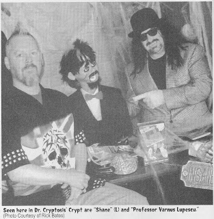
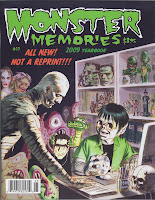

This is erie!
5/4/2009
Well, I guess I've finally arrived in this business. I've been recognized on the pages of Monster Memories 2009 Yearbook*! The magazine contains a feature interview with "Dr. Ivan Cryptosis" (Rick Bates). When reporter Dick Nitelinger asked Rick about the sidekicks (human and non-human) used for his television work, Rick Bates gave the following answer:
"During the late 1970s, my Dad decided he wanted to be a ventriloquist. He purchased a professional figure from the famous Maher Ventriloquist Studios. The figure is handcarved out of basswood by famed vent artist Clinton Detweiler. He also took the Maher Home Ventriloquist Course. This was one of my Dad's crazier endeavors. The dummy's original name was Johnny and was a pretty plain looking kid. He wore a plaid shirt, jeans, and cowboy boots. He spent the next 25+ years lying on my old bed at my parent's house.
"Dad wasn't very good. Neither am I. The difference is he took the premier ventriloquist course. I saved the money and hijacked the dummy. On 1 April 2006 , 'Professor Varnus Lupsecu' emerged. His looked changed-the result of a monstrous makeover: punk black hair with a fuchsia strip, scars, dark eyes, Fu Manchu moustache, goatee, black suit and red bow tie. I decided to team him with 'Tommy the Headless Ventriloquist.' I thought it kind of clever. Billed as 'Professor Varnus Lupescu and Tommy,' everyone goofed thinking the dummy was Tommy,- just like Frankenstein and the monster.
"Sadly, 'Tommy', because of all the costume issues, never appeared on 'Friday Night Frights'. That didn't stop the Professor. I took control of him, and while not on all shows, he does appear often-and at personal appearances. When I operate him I intentionally move my lips. Shane is always telling me that I'm the world's worst ventriloquist! It's one of our running gags. Dad is very proud. I still like the idea of the headless ventriloquist and may reintroduce 'Tommy' somewhere along the line."
* * * * *
As my mother used to say, "Oh, me; oh, my!" And my day was going so well! Adelia and I learned long ago that while some Maher students make us proud there's the chance others may make us second guess our career choice. Once those dummies leave my shop, their adventures are out of my hands. It can be a scary thought! :-)
And here's another factual matter just for the record, I did NOT make the dummy referred to in this interview. No, "Professor Varnus Lupescus" appears to be a Lovik Knee Pal! So while I made the pages of "Monster Memories" it was not fully by my own merits - oh, me; oh, my!
* http://www.scarymonstersmag.com/
"During the late 1970s, my Dad decided he wanted to be a ventriloquist. He purchased a professional figure from the famous Maher Ventriloquist Studios. The figure is handcarved out of basswood by famed vent artist Clinton Detweiler. He also took the Maher Home Ventriloquist Course. This was one of my Dad's crazier endeavors. The dummy's original name was Johnny and was a pretty plain looking kid. He wore a plaid shirt, jeans, and cowboy boots. He spent the next 25+ years lying on my old bed at my parent's house.
{kind=link}

"Dad wasn't very good. Neither am I. The difference is he took the premier ventriloquist course. I saved the money and hijacked the dummy. On 1 April 2006 , 'Professor Varnus Lupsecu' emerged. His looked changed-the result of a monstrous makeover: punk black hair with a fuchsia strip, scars, dark eyes, Fu Manchu moustache, goatee, black suit and red bow tie. I decided to team him with 'Tommy the Headless Ventriloquist.' I thought it kind of clever. Billed as 'Professor Varnus Lupescu and Tommy,' everyone goofed thinking the dummy was Tommy,- just like Frankenstein and the monster.
"Sadly, 'Tommy', because of all the costume issues, never appeared on 'Friday Night Frights'. That didn't stop the Professor. I took control of him, and while not on all shows, he does appear often-and at personal appearances. When I operate him I intentionally move my lips. Shane is always telling me that I'm the world's worst ventriloquist! It's one of our running gags. Dad is very proud. I still like the idea of the headless ventriloquist and may reintroduce 'Tommy' somewhere along the line."
* * * * *
As my mother used to say, "Oh, me; oh, my!" And my day was going so well! Adelia and I learned long ago that while some Maher students make us proud there's the chance others may make us second guess our career choice. Once those dummies leave my shop, their adventures are out of my hands. It can be a scary thought! :-)
{kind=link}

And here's another factual matter just for the record, I did NOT make the dummy referred to in this interview. No, "Professor Varnus Lupescus" appears to be a Lovik Knee Pal! So while I made the pages of "Monster Memories" it was not fully by my own merits - oh, me; oh, my!
* http://www.scarymonstersmag.com/